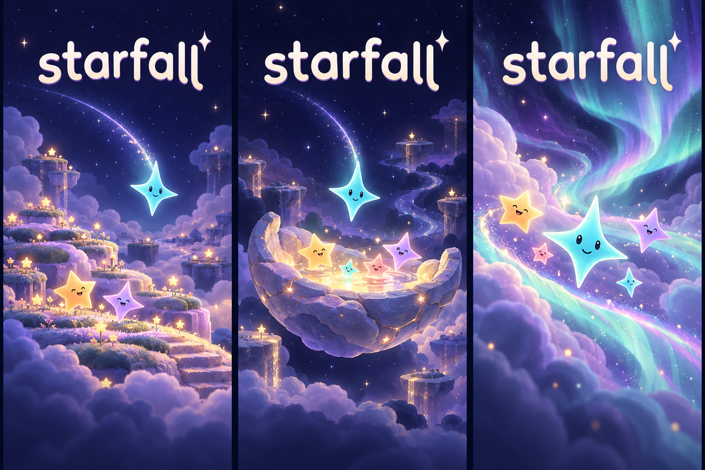

Starfall / Brand exploration 02 / 17 October 2026A softer signature.
A world to fall into.
Keep the warmth of Soft Landing. Add fuller letterforms, a little tactile depth, and a scene that tells us where the stars are going.
Lettering / one direction, more presence
01 / Previous
The simpler reference. Open and quiet, with thin rounded strokes.
02 / Soft BloomBroader bowls, more weight, a lifted f shoulder and more deliberate descending tails. Flat proof comes first.
03 / Pearl finishA restrained illustrated finish for covers. The single-color version remains the identity.
Scene / three places for the same stars
The image below is an AI-generated art-direction study. Its title lettering is illustrative; the SVGs above are the editable wordmark candidates.

A / Cloud gardenSomewhere soft to land
Layered clouds and tiny star sprouts create a welcoming place. Strongest storybook feeling; carries the most landscape detail.
B / Gathering basinA sky that collects light
A small family gathers as another star arrives. Closest to the actual accumulating-star idea; the basin is a cover metaphor, not proposed gameplay.
C / Aurora driftThe sky is alive
Flowing ribbons give movement and depth without a literal destination. Best continuity with the current abstract night sky.
Preferred next direction: Soft Bloom lettering with the gathering scene. Keep the family small, make the incoming aqua star the focal point, and reserve quiet sky around the title. Bring only a trace of this atmosphere into gameplay so the board stays dominant.
How this could arrive
Cover: full scene and one clear Play action. Native launch: a quiet static slice of the same sky. If startup work needs a loading state, reveal the gathering light gently; never manufacture a wait. Motion and native layout are still design intent.